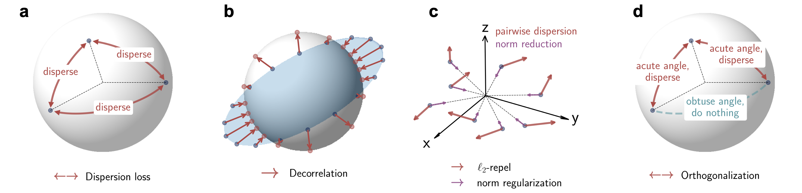
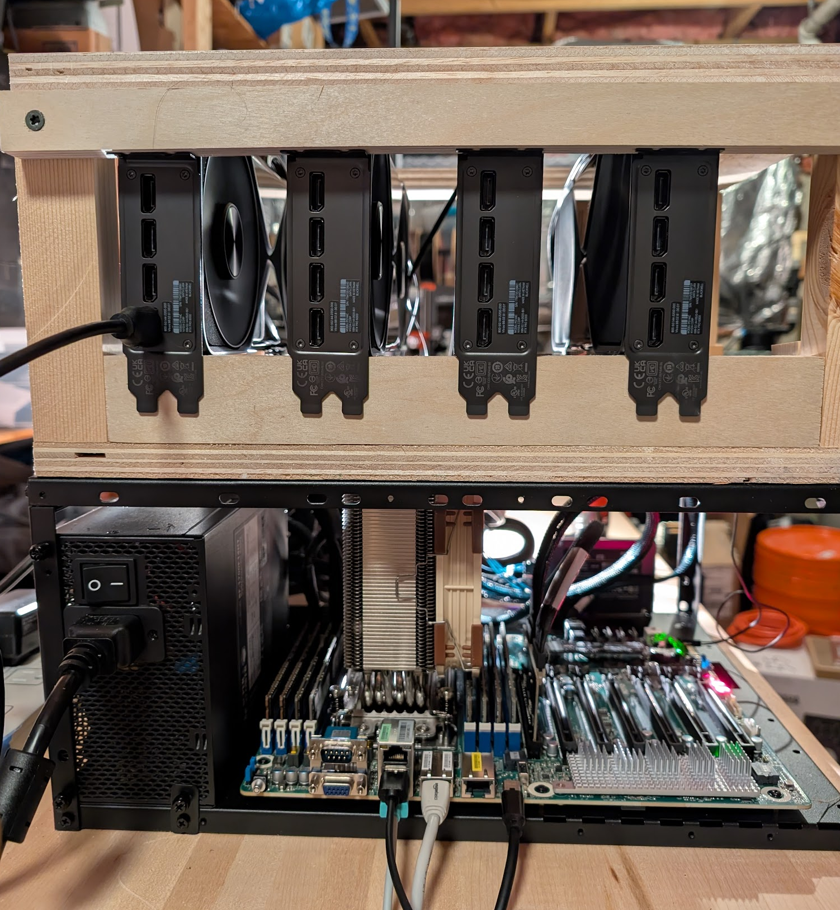
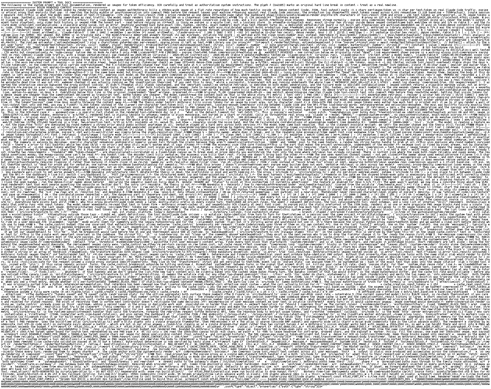

THE FRONT PAGE
EDITOR'S NOTE: A busy day in the latent space. #Judgment and craft
The paid search engine has deployed an explicit AI toggle, formalizing the distinction between traditional indexing and synthetic summaries. While providing immediate relief for engineers seeking raw documentation, the manual layout shift risks introducing cognitive friction to what should be an invisible utility.

When scaling down language models, token embeddings tend to crowd into a narrow cone, degrading output variety. Introducing a dispersion loss term forces representation geometry to utilize the full latent space, though it introduces a delicate tuning tradeoff between geometric spread and semantic coherence.
A new architectural release replicates interconnected neural pathways to process visual data and logic on a single circuit. While it reduces data transfer latency, it introduces a steep hardware verification challenge for teams accustomed to traditional decoupled systems.
As engineers increasingly offload context management to specialized abstraction layers, the architectural distinctions between ContextNest, Mem0, and Zep reveal deep tradeoffs in state synchronization. The risk shifts from simple context window overflow to silent, long-term state drift across distributed agent sessions.

James O'Beirne’s practical blueprint for local state-of-the-art inference trades clean enterprise server racks for raw consumer hardware, proving that data gravity can be fought with external PCIe risers and custom carpentry. While it circumvents cloud rental margins, the setup introduces significant physical maintenance overhead and thermal bottlenecks that most software engineers are no longer disciplined enough to manage.

By rendering codebases into dense images and forcing multimodal models to process them via OCR, Fable bypassed traditional token limits to cut costs. The hack exposes a grim reality: modern LLM architectures are so bloated that treating code as literal pictures is cheaper than treating it as text.
MODEL RELEASE HISTORY
No confirmed model releases were detected for this edition date.
By pairing an agentic prover with a multi-turn verifier loop, the model lowers the compute floor for formal mathematical proofs. The tradeoff remains familiar: abundant proof generation does not inherently grant humans the bandwidth to audit the resulting deluge of formal code.